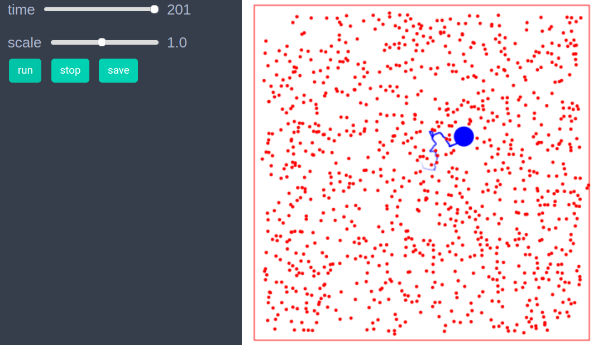

Brownian Particle
using EasyABMStep 1: Create Agents and Model
balls = con_2d_agents(1000, pos = Vect(0.0,0.0), size = 0.05,mass=1.0,
keeps_record_of = Set([:pos]))
box = con_2d_agent(pos=Vect(5.0,5.0), shape = :square_line, size = 10.0)
model = create_2d_model([box, balls...], agents_type=Static, space_type = NPeriodic, dw =0.1)Step 2: Initialise the model
function initialiser!(model)
xdim, ydim = model.size
#medium
for i in 3:length(model.agents)
agent=model.agents[i]
agent.pos = Vect(rand()*xdim, rand()*ydim)
v = Vect(rand()-0.5, rand()-0.5)
agent.vel = v/(veclength(v)+0.001)
agent.last_pos = agent.pos
end
#brownian particle
model.agents[2].size = 0.15 #
model.agents[2].color = cl"blue"
model.agents[2].pos = Vect(5.0,5.0)
model.agents[2].vel = Vect(0.0,0.0)
model.agents[2].mass = 10.0
end
init_model!(model, initialiser=initialiser!)Step 3: Defining the step_rule! and running the model
function components(vec1, dir)
val = dotprod(vec1, dir)
vec_parl = dir*val
vec_perp = vec1-vec_parl
return vec_parl, vec_perp
end
function transfer_momentum(agent, nbrs)
for nbr in nbrs
dir = nbr.pos - agent.pos
dist = veclength(dir)
if (nbr.shape == :circle) && (dist < agent.size+nbr.size)
unit_dir = dir/dist
mag = (agent.size+nbr.size) - dist
disp = unit_dir*mag*0.5
agent.pos -= disp
nbr.pos += disp
ag_vel_parl, ag_vel_perp = components(agent.vel, unit_dir)
nbr_vel_parl, nbr_vel_perp = components(nbr.vel, unit_dir)
x = nbr.mass/agent.mass
agent.vel = ag_vel_perp + (2*x*nbr_vel_parl+(1-x)*ag_vel_parl)/(1+x)
nbr.vel = nbr_vel_perp + (2*ag_vel_parl+(x-1)*nbr_vel_parl)/(1+x)
end
end
end
function reflect_from_boundaries(agent,xdim,ydim,dw)
x,y=agent.pos
velx, vely = agent.vel
if (x< dw) && (velx <0)
velx =-velx
end
if (x> xdim - dw) && (velx > 0)
velx =-velx
end
if (y< dw) && (vely <0)
vely =-vely
end
if (y> ydim- dw) && (vely > 0)
vely =-vely
end
agent.vel = Vect(velx, vely)
end
function step_rule!(model)
xdim, ydim = model.size
dw = model.properties.dw
search_radius = model.agents[2].size # radius of the Brownian particle
for i in 2:length(model.agents)
agent=model.agents[i]
reflect_from_boundaries(agent,xdim, ydim, dw)
nbrs = neighbors(agent, model, search_radius)
transfer_momentum(agent, nbrs)
agent.pos += agent.vel*0.1
end
end
run_model!(model, steps=200, step_rule = step_rule!)Step 4: Visualisation
animate_sim(model, tail=(200, agent-> agent.color==cl"blue"))
References
- https://en.wikipedia.org/wiki/Brownian_motion